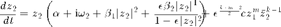
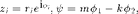
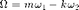

rStarCoupledkm
[r1Star, r2Star, psiStar, stability, stabType] = rStarCoupledkm(alpha, beta1, beta2, epsilon, coupling strength, Omega, k, m, All)
Finds r1*, r2*, psi*, stability (1 or 0), and stability type (0-4) numerically for two canonical oscillators coupled via nonlinear monomial for k:m mode-locking. rStarCoupledkmSym provides ONLY SYMMETRIC solutions (i.e., r1* = r2*). Omega = m*omega_1 - k*omega_2 is the deviation of the two natural frequencies from the exact integer relationship (k:m). Set the optional input argument 'All' to 1 (or any nonzero value) to get both stable and unstable fixed points. (Default for All is 0, that is, rStarCoupledkm outputs only stable fixed points.)
stability: 1 = stable, 0 = unstable
stabType: 4 = stable node, 3 = stable spiral, 2 = unstable node, 1 = unstable spiral, 0 = saddle point
Contents
Equation


where  and 
function [r1Star, r2Star, psiStar, stability, stabType] = ... rStarCoupledkm(a, b1, b2, e, c, W, k, m, All)
warningOn = 0; % Turn on the warning on nonreal psi*
Check input arguments
if nargin < 9 All = 0; % default: only stable points end if b2 == 0 && e ~= 0 e = 0; end if mod(k,1) || mod(m,1) || k <= 0 || m <= 0 error('k and m must be positive integers') end
Find symmetric steady-state amplitudes (r1 = r2 = r)
order = max(4,k+m); coeff = zeros(1,order+1); coeff(end-4:end) = [ e^2*(b2-b1)^2, ... 2*e*(b2-b1)*(b1-a*e), ... b1^2+e*(2*a*b2-4*a*b1+a^2*e+e*(W/(k+m))^2), ... 2*(a*b1-e*a^2-e*(W/(k+m))^2), ... a^2+(W/(k+m))^2 ]; coeff(end-k-m:end-k-m+2) = coeff(end-k-m:end-k-m+2) + ... [-c^2*e^(k+m), 2*c^2*e^(k+m-1), -c^2*e^(k+m-2)]; r = sqrt(roots(coeff)); r = r(find(abs(imag(r)) < eps('single'))); % take only real roots r = real(r); r = r(find(r ~= 0)); r = unique(r); % remove multiple roots r = r(find(r < 1/sqrt(e))); % take r's below the asymptote r1 = r; r2 = r;
Find corresponding relative phases
signPsi = (W >= 0)*2 - 1; psi = signPsi*acos(-(a*r1+b1*r1.^3+e*b2*r1.^5./(1-e*r1.^2))./ ... (e^((k+m-2)/2)*c*r2.^k.*r1.^(m-1))); if warningOn maximag = max(abs(imag(psi))); if maximag > eps('single')*100 disp(['Warning (rStarCoupledkmSym): significant nonzero imaginary '... 'part in psi (' num2str(maximag) ') for W = ' num2str(W)]) end end psi = real(psi);
Stability analysis using Jacobian matrix
stabType = zeros(size(r1)); for n = 1:length(r1) J = JacobianCoupledkm(a,b1,b2,e,c,k,m,r1(n),r2(n),psi(n)); ev = eig(J); if isreal(ev) && all(ev < 0) stabType(n) = 4; % stable node elseif all(real(ev) < 0) stabType(n) = 3; % stable spiral elseif isreal(ev) && all(ev > 0) stabType(n) = 2; % unstable node elseif all(real(ev) > 0) stabType(n) = 1; % unstable spiral end % saddle pt otherwise end stability = (stabType >= 3); % 1 = stable, 0 = unstable
Prepare output
if All % both stable and unstable fixed points r1Star = r1; r2Star = r2; psiStar = psi; else % only stable solutions indStab = find(stability); r1Star = r1(indStab); r2Star = r2(indStab); psiStar = psi(indStab); stability = stability(indStab); stabType = stabType(indStab); end
Calculate Jacobian matrix
function J = JacobianCoupledkm(a, b1, b2, e, c, k, m, r1, r2, psi) J = zeros(3); J(1,1) = a + 3*b1*r1^2 + e*b2*r1^4*(5-3*e*r1^2)/(1-e*r1^2)^2 + ... (m-1)*e^((k+m-2)/2)*c*r2^k*r1^(m-2)*cos(psi); J(1,2) = k*e^((k+m-2)/2)*c*r2^(k-1)*r1^(m-1)*cos(psi); J(1,3) = -e^((k+m-2)/2)*c*r2^k*r1^(m-1)*sin(psi); J(2,1) = m*e^((k+m-2)/2)*c*r1^(m-1)*r2^(k-1)*cos(psi); J(2,2) = a + 3*b1*r2^2 + e*b2*r2^4*(5-3*e*r2^2)/(1-e*r2^2)^2 + ... (k-1)*e^((k+m-2)/2)*c*r1^m*r2^(k-2)*cos(psi); J(2,3) = -e^((k+m-2)/2)*c*r1^m*r2^(k-1)*sin(psi); J(3,1) = -e^((k+m-2)/2)*c*(k*m*r1^(m-1)*r2^(k-2) + ... m*(m-2)*r1^(m-3)*r2^k)*sin(psi); J(3,2) = -e^((k+m-2)/2)*c*(k*(k-2)*r1^m*r2^(k-3) + ... k*m*r1^(m-2)*r2^(k-1))*sin(psi); J(3,3) = -e^((k+m-2)/2)*c*r1^(m-2)*r2^(k-2)*(k*r1^2 + m*r2^2)*cos(psi);